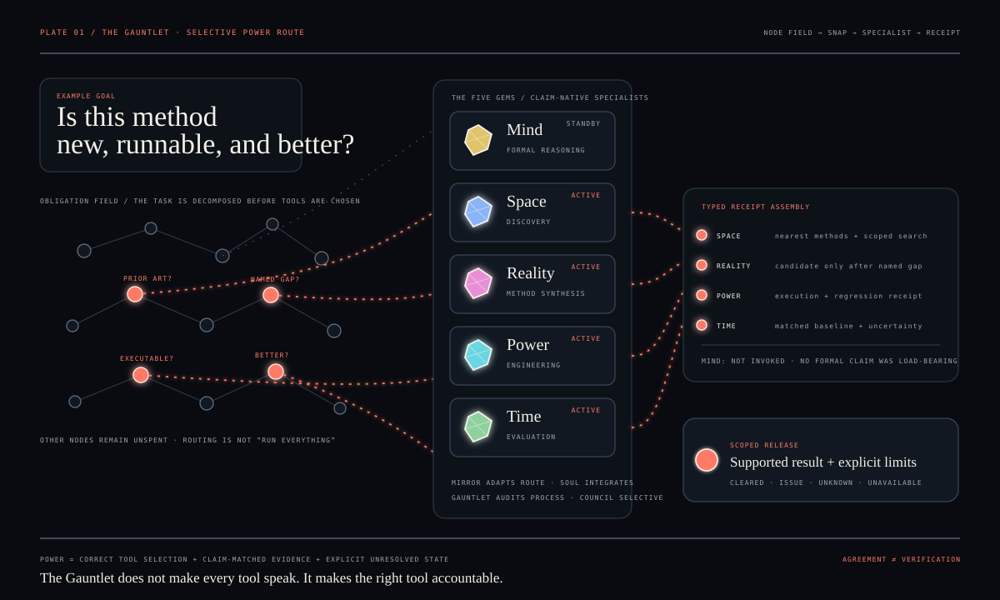
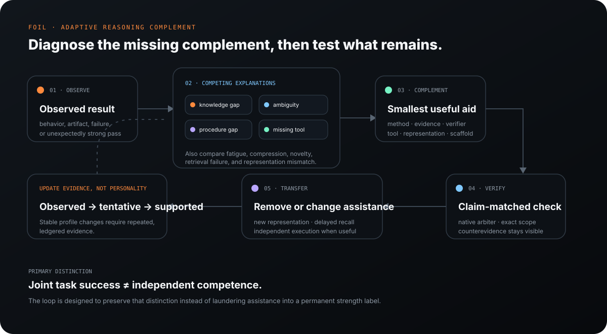
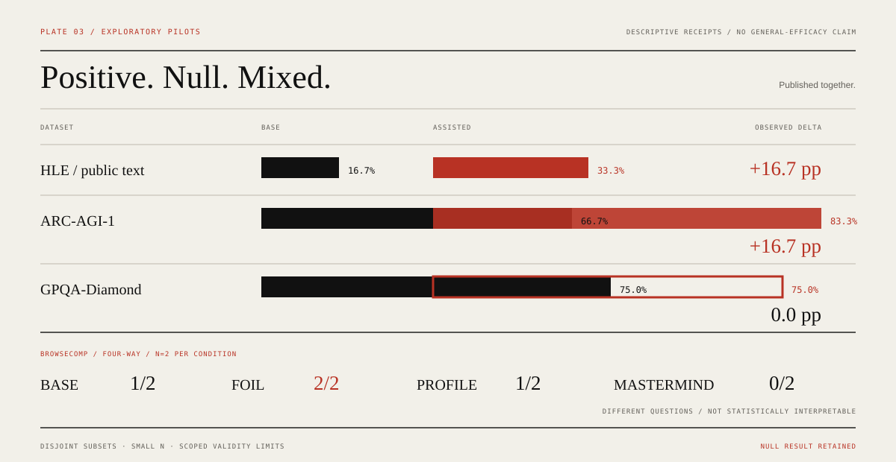

Mirror structural validation
Source, structure, and regression checks recorded under the legacy FOIL artifact names.
ONE CONTROL SURFACE · MANY SPECIALIST TOOLS
Powerful tools already exist. The hard part is choosing and combining the right ones without losing track of what they actually proved.
The Gauntlet makes that easier. Give it the goal; it frames the task, routes each load-bearing obligation to the right specialist method, records what was actually checked, audits the process, and releases only the conclusion the evidence supports. Mirror adapts that routing by identifying the smallest task-relevant complement that is missing.
Specification and source checks are reproducible. Behavioral efficacy remains a research question.
The point is not to make more agents talk. The point is to turn one goal into explicit obligations, select the right specialist tools, preserve evidence provenance, and keep unresolved claims unresolved.

Each Gem is a bounded specialist route with a different evidentiary job. They are not five personalities voting on the same answer.
/mindOpenTurns mathematical and logical claims into explicit objects, assumptions, negations, and proof obligations.
PROVEN, MEASURED, CITED, DERIVED, otherwise unresolved./spaceOpenSearches before novelty: papers, repositories, standards, current facts, implementations, and cross-domain prior art.
NOT FOUND means not found within the stated search scope; it never proves nonexistence./realityOpenInvents only after Space establishes the nearest known approaches and a named constraint they fail.
/powerOpenConverts executable software claims into runnable checks and preservation obligations.
/timeOpenTests whether a mechanism improves the construct that actually matters under an evaluation design that can distinguish the cause.
Click any module for its trigger, workflow, authority boundary, and canonical specification.
Frame → decompose → route → integrate → assure → release.
/soulOwns routing and synthesis, not domain authority. It creates load-bearing obligations, invokes only the needed specialist routes, compares evidence by quality/independence/recency/scope, then releases a scoped result.
Research Orchestrator spec ↗Find the smallest task-relevant missing complement and supply only what is needed.
/foil · legacy IDMirror compares current task requirements against current user/context evidence, keeps competing gap hypotheses, and routes the smallest useful complement through existing Gems and tools. It separates tool-assisted task success from later independent transfer. FOIL remains the legacy technical name in code, paths, receipts, and historical benchmark conditions.
/foil solve/foil both/foil teach/foil defense/foil formalize/foil verify/foil researchAudit the frame, process, stale state, inherited premises, and false-green gaps.
/gauntletThe Gauntlet fires the smallest relevant subset of ten assurance operations: frame, audit, costume, derive, self, redirect, refresh, boundary, explain, and oob.
Ground the current state before consequential action or after drift.
orchestrator-invokedSTILL → GROUND → ORIENT → WEIGH → RELEASE. It is a short reset, not ceremony: confirm authoritative state, goal, supported facts, assumptions, unknowns and irreversible costs, then choose one high-value next action.
Decision Preflight spec ↗Selective independent review with commit-reveal and a strong direct control.
/councilOff by default. When justified, 3–6 artifact-derived seats independently commit before cross-critique, include a skeptic, preserve disagreement, and are compared against a matched direct analysis. Agreement is never treated as proof.
Evidence Review Panel spec ↗
The public page does not pretend every helper is a separate agent. The runtime is grouped by the job it is authoritative for, with direct source links for inspection.
Common obligation types, content-addressed storage, hooks, runtime state, and the release gate.
Typed proof obligations, search plans, mechanism candidates, verification plans, and evaluation receipts.
Mirror keeps evidence semantics, assistance/ownership, gap vocabulary, provider-neutral capabilities, persistent profile state and benchmark guardrails in separate source-of-truth modules. The implementation deliberately retains foil_* names for compatibility.
Gauntlet hooks monitor process hazards. Black Gem produces the typed ADVERSARY obligation: it can expose an ISSUE, but surviving the attack never becomes CLEARED.
Typed support for the Decision Preflight and Evidence Review Panel, with explicit unavailable/unknown states rather than fabricated certainty.
Full runtime ownership map: docs/ARCHITECTURE.md ↗
The current question is whether an evidence-governed modular reasoning workflow can improve traceability, verification discipline, and independent usefulness of AI-assisted research without confusing agreement, confidence, or passing software checks with scientific validity. The complete behavioral answer has not been established.
A green engineering gate is not converted into a behavioral research claim. Structural checks, specification coverage, exploratory pilots, and prospective efficacy remain separate.
Source, structure, and regression checks recorded under the legacy FOIL artifact names.
PASS-SPEC means the required decision behavior is represented in specification; it is not execution evidence.
Small, scoped model-task pilots include positive, null, and mixed outcomes.
Matched-budget and independent-transfer evidence remains on the research roadmap.
Passing software/specification gates establishes only the properties those gates observe. It does not prove model behavior, research efficacy, or downstream scientific validity.
Reproducibility contract ↗These are small deterministic disjoint-subset pilots using GPT-5.6 Sol, not official leaderboard submissions or complete-system efficacy studies. The goal is to preserve raw directional evidence, including the null result, rather than optimize the story. Historical benchmark condition names retain FOIL for reproducibility.

BASE 1/6 → assisted 2/6. Small blinded pilot.
BASE 4/6 → assisted 5/6. Small blinded pilot.
BASE 9/12 → assisted 9/12. The follow-up produced a null result.
BASE · FOIL · PROFILE · MASTERMIND. Legacy condition IDs; disjoint items; descriptive only.
Pilot benchmark results do not establish general efficacy.
The reproducibility contract distinguishes repository/specification properties from behavioral research. A validation pass establishes only the invariants the validator actually checks.
python validation/validate_soul_gauntlet_public.py
python validation/validate_showcase.py
python -m compileall -q validationSecurity, governance, contribution rules, citation, change history, research state, and reproduction are public review surfaces—not footer archaeology.
Absence and novelty are scoped research claims.
Observed software behavior outranks plausible software prose.
Verification must cover the externally defined claim, not merely its own checklist.
Behavioral efficacy must be demonstrated prospectively, not inferred from specification quality.
RESEARCH SOFTWARE v0.5.1 · SHOWCASE R15 · MIT
The repository exposes the system specification, skill contracts, typed runtimes, research statement, reproducibility protocol, benchmark receipts, roadmap, governance, security policy, and a public benchmark of research-site information architecture.
Open research repository ↗